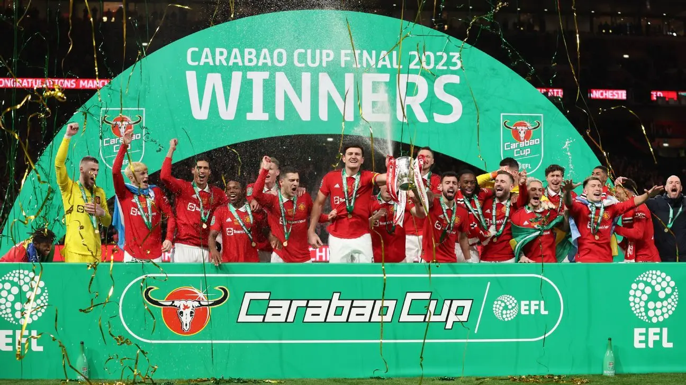

Newcastle United
The Carabao Cup Final took place on the 26th February 2023. Both Newcastle and Man United were strong favourites to win and both teams were desperate to win a trophy. United had not won a trophy since 2017 meanwhile Newcastle had a considerably longer wait, not winning a trophy since 1955. The last time both teams had met in a final was in the 1999 FA Cup final in which United beat Newcastle 2-0. And just like that previous meeting, United again beat Newcastle 2-0, and Newcastle's almost 70 year wait for a trophy would continue. United however, were victorious, with many players as well as manager Erik Ten Hag, winning their first trophy with Man United.
